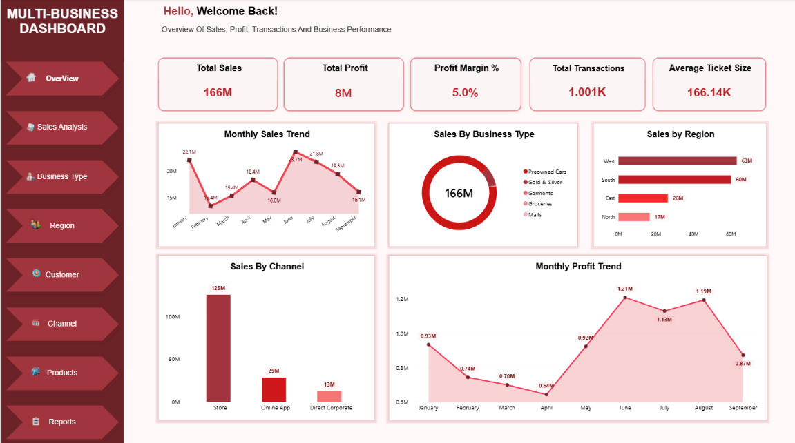
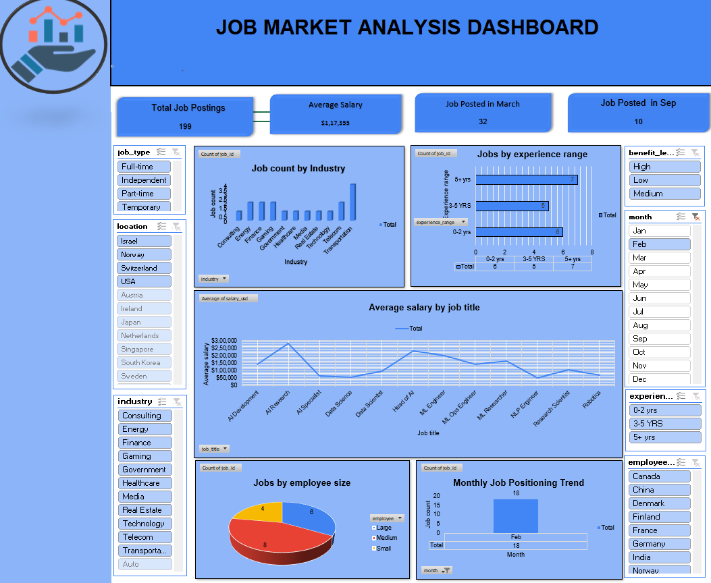

Practical projects demonstrating my skills in data analysis, SQL, Excel, Python, and Power BI.

Excel | Power BI | DAX
Developed a dashboard to analyze sales, profit, transactions, business types, and performance trends through key performance indicators and interactive visualizations.

Microsoft Excel | Pivot Tables | Charts
Created an Excel dashboard to explore job market information and present patterns in job postings, salary trends, and hiring information.
MySQL
Practiced employee database management and data retrieval using SQL queries to filter, sort, and analyze records.
Python | SQL | Machine Learning
Worked on an internship project involving food ordering feedback data, preprocessing, exploratory data analysis, and assistance with Random Forest model development and evaluation.